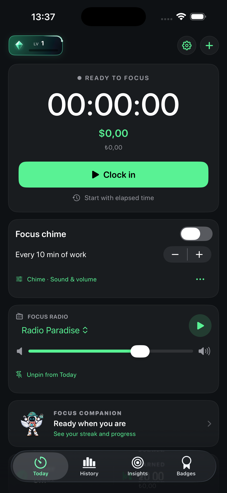
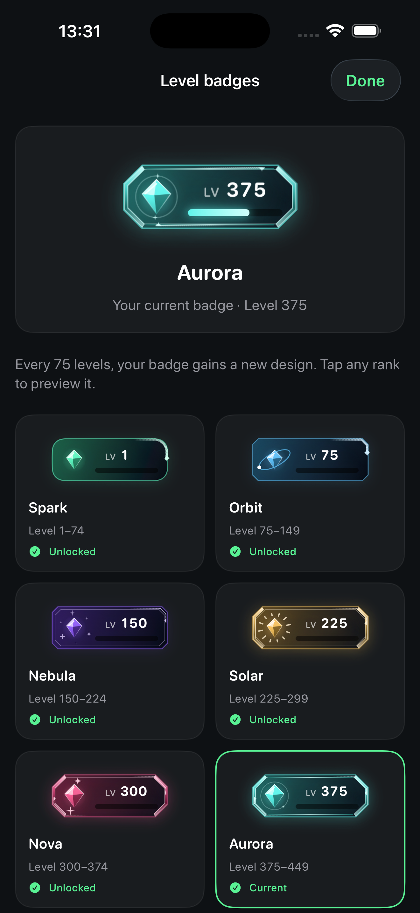
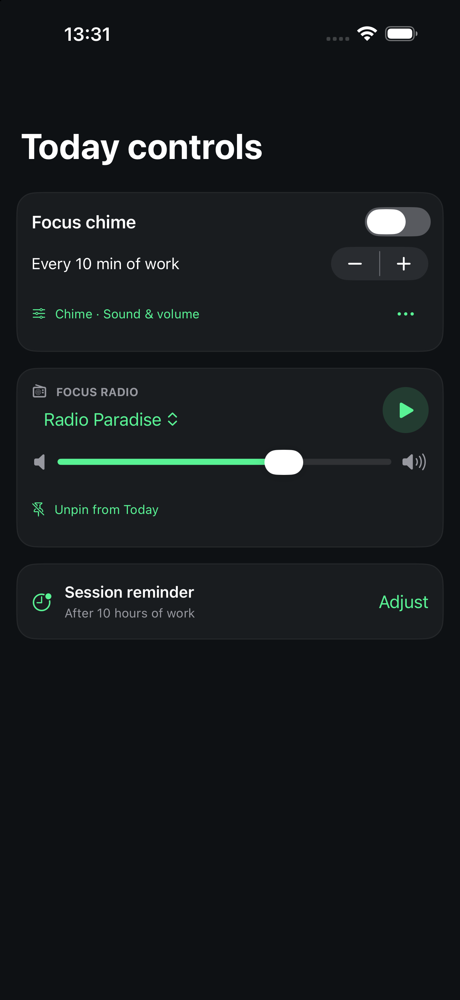
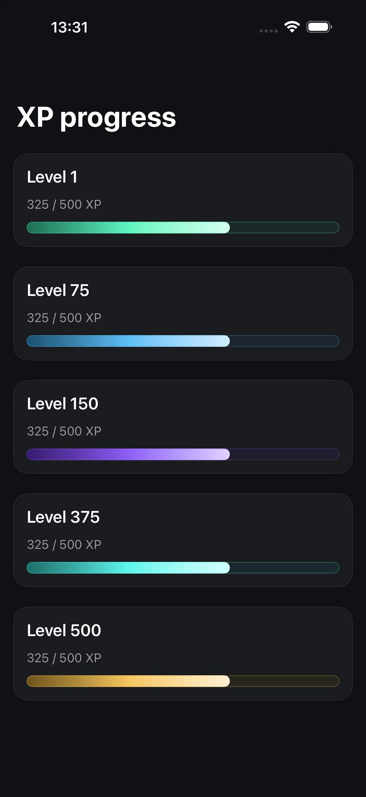
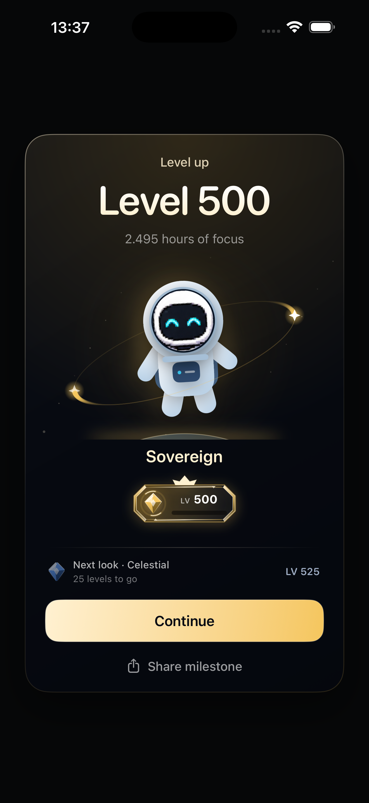

CLOCKIN · iOS ÖNİZLEMEDüzeltmeler ve yeni kontroller
Rozetler
60 FPS hedefi · Aurora ve Sovereign halka hareketleri değiştirildi; halkalar elmasa yaklaştırıldı.
Dashboard
Level rozeti %14 küçültüldü. Sabitlenen odak kontrolleri sayacın hemen altında.

Level galerisi
Badges → Level badges. Kazanılan ve kilitli rozetleri seçerek inceleyebilirsin.

Sabitleme
Focus Chime, Radio ve oturum hatırlatıcısını Today ekranına ekle. Ayarlar → Today → Pinned controls.

XP barı
Yan simgeler, noktalar ve kesen çizgiler kaldırıldı. Doluluk yalnızca gerçek XP ilerlemesini gösterir.

Kutlama
Level kartı artık otomatik kapanmıyor. Devam düğmesiyle kapatılıyor.
